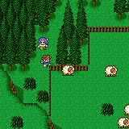

Side-Quest
Boko
ในช่วงเริ่มเกม เมื่อได้เรือของ Faris ก่อนไปยัง Wind Shrine
ให้นั่งเรือกลับไปยังถ้ำโจรสลัด (Pirate Cave)
จะเจอกับ Boko นอนบาดเจ็บอยู่
Tycoon
ในครั้งแรกที่ได้มังกรบิน (Hiryuu) ให้ขี่มังกรกลับไปยังปราสาท Tycoon
จะได้รับการต้อนรับอย่างดี
Treasure
of Walz
ภายในปราสาท Walz จะมีทางลับสองทาง

จากรูปภาพคือ ประตูบน และประตูล่าง
หากขึ้นประตูบนจะเจอทางลับ ซึ่งมีศัตรูอาศัยอยู่
ศัตรูตัวนั้นคือ Garkimasra (Harpies) ซึ่งโจมตีรุนแรงมาก
อีกทั้งยังมีพลังป้องกันที่สูงมาก ยากที่จะเอาชนะได้
Garkimasra
HP : 666
หนทางเดียวที่มีก็คือ "หนี"
โดยใช้ Ability "Flee" ของอาชีพ "ขโมย"
หรือ Ability "Smoke" ของอาชีพ "นินจา"
ภายในนั้นจะมีสมบัติอยู่คือ Time Magic "Drag"
Shiva
ภายในปราสาท Walz จะมีทางลับสองทาง
จากรูปภาพคือ ประตูบน และประตูล่าง
หากลงประตูล่างจะเจอทางลับไปเอา Summon Magic "Shiva"
เข้าไปภายในน้ำตกจะมีทางลับ
ด้านในสุดจะเจอ Summon Sphere
Boss : Shiva
HP : 1,500
Weakness : Fire
IceComandr X 3
HP : 600
Weakness : Fire
เมื่อปราบได้จะสามารถ Summon Shiva
ได้
* Note : หากยังไม่มี Fire2 อาจต่อสู้ได้อย่างลำบาก
ให้ไปซื้อ Fire2 จากหมู่บ้าน Kanak ก่อน แล้วค่อยกลับมาสู้ก็ได้
Istory
หมู่บ้านนี้อยู่ทางด้านทิศตะวันตกเฉียงเหนือของแผนที่
ภายในหมู่บ้านมีความลับซ่อนอยู่มากมาย
Toad Magic
ภายในหมู่บ้าน ด้านซ้ายบนจะมีแปลงดอกไม้
ให้เดินวนรอบๆ แปลงดอกไม้ (เดินเหยียบดอกไม้สีชมพู)
เมื่อเดินครบ 1 รอบ จะมีกบกระโดดออกมาและจะได้รับ Black Magic Toad
Love Song
ด้านขวาของหมู่บ้านจะมีคอกเลี้ยงแกะ แต่จะมีแกะอยู่ตัวหนึ่งที่โมโหง่าย
แกะตัวนั้นคือตัวที่ยืนริมรั้วด้านซ้ายสุด

ให้ไปยืนหลังแกะตัวนั้น แล้วกดสำรวจ แกะจะแตะ Butz กระเด็นออกไปพ้นรั้ว
ให้คุยกับนักกวีที่ยืนอยู่ตรงนั้น
เขาจะถามว่า Butz คือนักรบที่ออกมาปกป้อง Crystal หรือไม่
ให้ตอบใช่ เขาจะให้ Love Song มา
Ramuh
บริเวณป่ารอบๆ หมู่บ้าน Istory บางครั้งจะเจอกับ Ramuh
Boss : Ramuh
HP : 4,000
Weakness : Water
เมื่อปราบได้จะได้รับ Item : Ramuh
ให้กดใช้จะเรียนรู้ Summon Ramuh ได้
* Note : Ramuh มี Lv 21 หาก Butz มี Lv 21 เท่ากัน
ให้ใช้ Blue Magic Goblin Punch จะสามารถปราบ Ramuh ได้ภายในการโจมตีเพียงครั้งเดียว
Lix
หมู่บ้าน Lix ตั้งอยู่ใกล้ๆ กับ Wind Shrine
ซึ่งหมู่บ้าน Lix นี้ เป็นบ้านเกิดของ Butz
เมื่อไปเข้าพักในโรงแรม ตอนกลางดึก Butz จะออกมาเยี่ยมหลุมศพของพ่อและแม่
พ่อของ Butz คือ Dorgan และแม่คือ Stella
แม่ของ Butz ตายไปตั้งแต่ Butz ยังเด็ก
หลังจากนั้นเขาก็ออกผจญภัยกับพ่อ และเมื่อ 3 ปีก่อน พ่อของเขาก็ตายจากไป
เข้าไปในบ้านหลังหนึ่ง ซึ่งเป็นบ้านเก่าของ Butz
แต่ตอนนี้มีนักกวีมาอาศัยอยู่
ให้สำรวจกล่องดนตรีสีชมพู Butz จะรำลึกความหลังครั้งยังเด็ก


Butz จะนึกถึงวันที่แม่ของเขาเสียชีวิต
หลังจากนั้นให้คุยกับนักกวีคนนั้นจะได้รับ "Song
Charm"
* Note : ที่หมู่บ้าน Lix นี้ สามารถซื้อสินค้าได้ในราคาถูกกว่าปรกติ